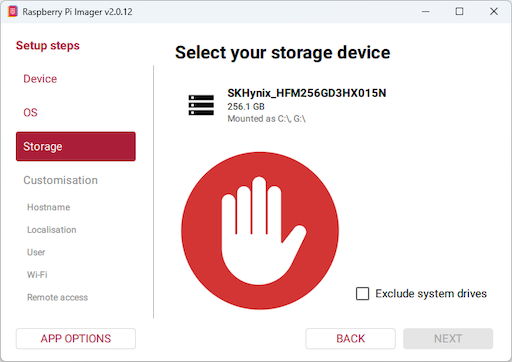
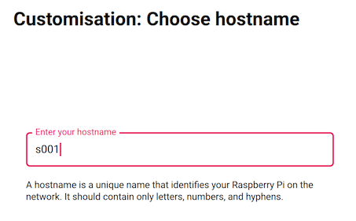
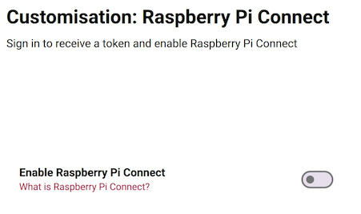

Raspberry Pi Setup
เอกสารนี้อธิบายการเตรียม Raspberry Pi ตั้งแต่การติดตั้งระบบปฏิบัติการบน microSD จนถึงการเชื่อมต่อผ่าน SSH ครั้งแรก เพื่อเป็นพื้นฐานสำหรับการศึกษา MQTT, Node-RED, SQLite และ Python ในบทปฏิบัติการถัดไป การใช้งานเป็นรูปแบบ headless ซึ่งควบคุมเครื่องผ่านเครือข่ายโดยไม่จำเป็นต้องเชื่อมต่อจอภาพ แป้นพิมพ์ หรือเมาส์กับ Raspberry Pi ระหว่างการใช้งานตามปกติ
ค่าการกำหนดค่าสำหรับบทปฏิบัติการนี้แสดงในตารางต่อไปนี้ และสอดคล้องกับภาพประกอบ Raspberry Pi Imager:
| รายการ | ค่าที่เลือก |
|---|---|
| Device | Raspberry Pi 3 |
| หมวด OS | Raspberry Pi OS (other) |
| OS | Raspberry Pi OS Lite (64-bit), Debian Trixie |
| Username | piuser |
| Hostname | s001 ตามภาพ ใช้ชื่อไม่ซ้ำกันสำหรับแต่ละเครื่อง |
| รหัสผ่านบัญชี Pi | รหัสผ่านที่ตั้งไว้ |
| Wi-Fi | SECURE NETWORK, SSID phuket-iot |
| Hidden SSID | ไม่เลือก สำหรับเครือข่ายที่ประกาศชื่อ SSID ตามปกติ |
| SSH | Enable SSH และ Use password authentication |
| Raspberry Pi Connect | ปิด |
เอกสารนี้กำหนด Hostname ตัวอย่างเป็น s001 ซึ่งไม่ใช่ค่าเริ่มต้นของ Raspberry Pi การใช้งานหลายเครื่องบนเครือข่ายเดียวกันต้องกำหนดชื่อเฉพาะสำหรับแต่ละเครื่อง เช่น s001, s002 และ s003 โดยปรับชื่อปลายทางในคำสั่ง SSH ให้สอดคล้องกับชื่อที่กำหนดจริง หลักการเดียวกันนี้ใช้กับชื่อเครื่องตัวอย่างในบทปฏิบัติการถัดไป
ลำดับการติดตั้งพื้นฐาน
ก่อนศึกษาการใช้งาน MQTT, Node-RED หรือ SQLite จำเป็นต้องเตรียม Raspberry Pi ตามลำดับต่อไปนี้:
ติดตั้ง Imager บน Windows/macOS เลือก Raspberry Pi 3 และ OS Lite 64-bit ระบุ microSD ปลายทาง กำหนดบัญชีผู้ใช้และเครือข่าย เขียนและตรวจสอบข้อมูลบนการ์ด จากนั้นเริ่มระบบและเชื่อมต่อผ่าน SSH เพื่อตรวจสอบการทำงาน ขั้นตอนในเอกสารนี้ดำเนินการกับ Raspberry Pi จริง ไม่ใช่ภายใน Docker Container
1. เตรียมอุปกรณ์และ Raspberry Pi Imager
- Raspberry Pi 3 สำหรับบทปฏิบัติการ
- microSD สำหรับติดตั้ง OS พร้อมเครื่องอ่านการ์ด บทปฏิบัติการนี้แนะนำความจุ 32 GB ขึ้นไป เพื่อรองรับฐานข้อมูลและบันทึกเหตุการณ์ (log)
- แหล่งจ่ายไฟ micro USB ที่เหมาะกับ Pi 3 เช่น 5 V 2.5 A และสายไฟที่จ่ายกระแสได้เพียงพอ
- คอมพิวเตอร์ Windows หรือ Mac ที่เชื่อมต่ออินเทอร์เน็ตได้ สำหรับดาวน์โหลดและเขียนอิมเมจระบบปฏิบัติการ
- ชื่อเครือข่าย Wi-Fi
phuket-iotและรหัสผ่าน สำหรับการปฏิบัติงานนอกห้องเรียนให้ใช้เครือข่ายที่สามารถเข้าถึงได้ในสถานที่นั้น
องค์ประกอบของบอร์ด Raspberry Pi 3

ภาพประกอบแสดง Raspberry Pi 3 Model B ผู้ปฏิบัติงานควรตรวจสอบชื่อรุ่นที่ระบุบนแผงวงจรก่อนเลือก Device ใน Imager พอร์ต USB และ Ethernet อยู่ด้านขวาของภาพ ส่วนพอร์ต HDMI และช่องจ่ายไฟ micro USB อยู่บริเวณขอบล่าง ช่อง microSD อยู่ด้านใต้แผงวงจรและไม่ปรากฏในภาพมุมนี้
การใช้งานแบบ headless ใช้ microSD เป็นสื่อจัดเก็บระบบปฏิบัติการ เชื่อมต่อเครือข่ายผ่าน Wi-Fi หรือสาย LAN และรับพลังงานผ่าน micro USB เมื่อกำหนดค่า SSH แล้ว ไม่จำเป็นต้องเชื่อมต่อจอภาพ HDMI หรือแป้นพิมพ์ ควรจับแผงวงจรบริเวณขอบและวางบนพื้นผิวที่ไม่นำไฟฟ้า หรือบรรจุในเคสก่อนใช้งาน
บทบาทของ microSD ในการจัดเก็บระบบและข้อมูล

microSD เป็นสื่อจัดเก็บข้อมูลหลักของเครื่อง ประกอบด้วย Raspberry Pi OS โปรแกรม ฐานข้อมูล SQLite และไฟล์งาน การเปลี่ยนการ์ดหรือเขียนระบบปฏิบัติการใหม่จึงมีผลต่อทั้งระบบและข้อมูลที่จัดเก็บอยู่บนการ์ด
การ์ดในภาพมีความจุ 128 GB ใช้เพื่อประกอบการอธิบายเท่านั้น ไม่ได้กำหนดให้ใช้ยี่ห้อหรือความจุตามภาพ บทปฏิบัติการนี้แนะนำความจุ 32 GB ขึ้นไปเพื่อรองรับการจัดเก็บข้อมูลเพิ่มเติม ควรเลือกการ์ดจากแหล่งที่เชื่อถือได้ พร้อมเครื่องอ่าน microSD แบบ USB หรือ SD adapter ที่รองรับช่องอ่านการ์ดของคอมพิวเตอร์ ทั้งนี้ adapter ทำหน้าที่แปลงขนาดทางกายภาพ ส่วนสื่อที่ติดตั้งใน Raspberry Pi ต้องเป็น microSD
ดาวน์โหลด Raspberry Pi Imager จากเว็บไซต์ Raspberry Pi และติดตั้งบนคอมพิวเตอร์ จากนั้นเปิดโปรแกรมและเชื่อมต่อ microSD ผ่านเครื่องอ่านการ์ด
ชื่อแท็บและปุ่มอาจแตกต่างกันตามรุ่นของ Imager จึงควรพิจารณาชื่ออุปกรณ์ ระบบปฏิบัติการ และค่าการกำหนดค่าที่ระบุในเอกสารนี้เป็นหลัก
2. เลือก Device เป็น Raspberry Pi 3
Raspberry Pi Imager แสดงลำดับขั้นตอนบริเวณด้านซ้าย เริ่มต้นที่ Device เพื่อระบุรุ่นของแผงวงจร ภาพประกอบเป็น Imager v2.0.12 ในสถานะที่ยังไม่ได้เลือกรุ่นอุปกรณ์ ปุ่ม NEXT จึงยังไม่สามารถใช้งานได้:

เลือกรายการ Raspberry Pi 3 ให้สอดคล้องกับอุปกรณ์ของบทปฏิบัติการ ไม่เลือกรายการ Raspberry Pi 5 หรือ Pi 4 หากรายการที่ต้องการยังไม่ปรากฏ ให้เลื่อนรายการรุ่นอุปกรณ์ เมื่อเลือกแล้วจึงกด NEXT เพื่อเข้าสู่ขั้น OS ภาพขยายต่อไปนี้แสดงชื่อรายการที่ต้องเลือก:

รายการนี้ครอบคลุมอุปกรณ์ในกลุ่ม Pi 3 ผู้ปฏิบัติงานต้องตรวจสอบรุ่นที่ระบุบนแผงวงจรก่อนดำเนินการ และไม่ควรเลือกอุปกรณ์ตามภาพหากไม่สอดคล้องกับฮาร์ดแวร์ที่ใช้งานจริง
3. เลือก Raspberry Pi OS Lite (64-bit)
ในหน้า OS เปิดหมวด Raspberry Pi OS (other):

จากนั้นเลือก Raspberry Pi OS Lite (64-bit) ซึ่งในภาพระบุว่าเป็น Debian Trixie และไม่มี desktop environment:

Lite เป็นระบบปฏิบัติการที่ไม่มีสภาพแวดล้อมเดสก์ท็อปแบบกราฟิก แต่รองรับ Linux, SSH และบริการ IoT ส่วน 64-bit ระบุสถาปัตยกรรมของระบบปฏิบัติการ ไม่ใช่ความจุของสื่อจัดเก็บข้อมูล บทปฏิบัติการนี้จึงกำหนดให้ใช้ Lite (64-bit) ไม่ใช่ Lite (32-bit), รุ่น Desktop หรือ Legacy
วันเผยแพร่ 2026-10-06 และขนาดดาวน์โหลดในภาพเป็นข้อมูลของอิมเมจ ณ เวลาที่บันทึกภาพ รายการที่เผยแพร่ภายหลังอาจมีวันหรือขนาดดาวน์โหลดแตกต่างกัน โดยต้องตรวจสอบชื่อ Lite, สถาปัตยกรรม 64-bit และฐานระบบ Debian Trixie ให้สอดคล้องกับข้อกำหนดของบทปฏิบัติการ
4. เลือก Storage ให้ถูกต้อง

ภาพตัวอย่างที่ไม่ปลอดภัย: Exclude system drives ไม่ได้เลือก จึงแสดงไดรฟ์ C: และ G: ของคอมพิวเตอร์ ห้ามเลือกไดรฟ์เหล่านี้แทน microSD
- เชื่อมต่อ microSD ผ่านเครื่องอ่านการ์ด แล้วเปิดหน้า Storage
- เลือก microSD โดยตรวจสอบชื่อและความจุ หากไม่พบหรือไม่แน่ใจ ให้หยุดและแจ้งผู้สอน
- ไปขั้น Customisation และตรวจสอบ Storage อีกครั้งก่อนกด Write
5. ตั้ง Hostname และเขตเวลา
ในขั้น Customisation: Choose hostname กรอก s001 ตามภาพ หรือชื่อประจำเครื่องที่ผู้สอนกำหนด Hostname คือชื่อของ Raspberry Pi บนเครือข่าย ไม่ใช่ชื่อผู้ใช้ piuser และไม่ใช่ชื่อ Wi-Fi phuket-iot:

กำหนดชื่อด้วยตัวอักษรภาษาอังกฤษ ตัวเลข และขีดกลาง - โดยไม่มีช่องว่าง บทปฏิบัติการนี้แนะนำตัวพิมพ์เล็กและชื่อที่สื่อความหมาย แต่ละเครื่องต้องใช้ชื่อเฉพาะ เช่น s001 และ s002 ไม่ควรกำหนดชื่อ s001 ให้กับทุกเครื่องบนเครือข่ายเดียวกัน
ช่อง Hostname รับเฉพาะชื่อเครื่อง เช่น s001 โดยไม่ระบุส่วนต่อท้าย .local สำหรับการเชื่อมต่อ SSH จากคอมพิวเตอร์ใช้ ssh piuser@s001.local หากต้องการเปลี่ยน Hostname หลังติดตั้งระบบปฏิบัติการ สามารถดำเนินการภายในระบบได้โดยไม่จำเป็นต้องเขียน microSD ใหม่
ในหน้า Localisation เลือกประเทศ/เมืองให้ตรงสถานที่ใช้งาน สำหรับห้องเรียนในประเทศไทยใช้ Thailand / Bangkok และเขตเวลา Asia/Bangkok ส่วน keyboard layout ให้ตรงกับคีย์บอร์ดที่ใช้ เช่น US
การกำหนดประเทศมีผลต่อช่องสัญญาณ Wi-Fi ที่ได้รับอนุญาต จึงต้องกำหนดให้สอดคล้องกับสถานที่ใช้งานจริง ไม่ควรใช้ค่าจากการกำหนดค่าครั้งก่อนโดยไม่ตรวจสอบ
6. สร้างผู้ใช้ piuser
ในหน้า Customisation: Choose username กำหนดดังนี้:
| ช่อง | ค่าที่กำหนด |
|---|---|
| Username | piuser |
| Password | รหัสผ่านที่ตั้งไว้สำหรับบัญชีนี้ |
| Confirm password | พิมพ์รหัสผ่านบัญชีนี้ซ้ำให้ตรงกัน |

รหัสผ่านนี้ใช้ยืนยันตัวตนเข้าสู่บัญชี Linux ผ่าน SSH และอาจใช้เมื่อเรียกคำสั่ง sudo โดยแยกจากรหัสผ่าน Wi-Fi และรหัสผ่าน MQTT ที่จะกำหนดในบทปฏิบัติการถัดไป สัญลักษณ์ในภาพใช้ปิดบังรหัสผ่าน ไม่ใช่การระบุรหัสผ่านสำหรับใช้งานจริง ข้อความ รหัสผ่านที่ตั้งไว้ เป็นคำอธิบายและห้ามนำไปใช้เป็นรหัสผ่านตามตัวอักษร
ชื่อบัญชี piuser ใช้ตัวอักษรพิมพ์เล็กตามภาพและเป็นบัญชีที่สร้างขึ้นในขั้นตอนนี้ จึงไม่ควรใช้ชื่อ pi หรือสมมติว่ามีรหัสผ่านเริ่มต้นสำหรับการเข้าสู่ระบบ
7. ตั้ง Wi-Fi phuket-iot
ในหน้า Customisation: Choose Wi-Fi เลือกและกรอกตามภาพ:
| รายการ | ค่าที่ใช้ |
|---|---|
| ประเภทเครือข่าย | SECURE NETWORK |
| SSID | phuket-iot |
| Password | รหัสผ่านจริงของ Wi-Fi phuket-iot |
| Confirm password | พิมพ์รหัสผ่าน Wi-Fi ซ้ำให้ตรงกัน |
| Hidden SSID | ไม่เลือก เว้นแต่เครือข่ายนั้นซ่อนชื่อจริง |

SSID และรหัสผ่านต้องตรงกับการกำหนดค่าของเครือข่าย โดยตรวจสอบตัวพิมพ์ใหญ่ ตัวพิมพ์เล็ก และช่องว่างเพิ่มเติม คอมพิวเตอร์ที่ใช้เชื่อมต่อ SSH ต้องอยู่บนเครือข่ายที่สามารถเข้าถึง Raspberry Pi ได้
8. เปิด SSH และใช้ Password Authentication
ในหน้า Customisation: SSH authentication:
- เปิด Enable SSH
- เลือก Use password authentication
- ไม่เลือก Use public key authentication สำหรับการกำหนดค่าเริ่มต้นของบทปฏิบัติการนี้

การเชื่อมต่อ SSH ใช้บัญชี piuser และรหัสผ่านที่กำหนดในหัวข้อ 6 ไม่ใช่รหัสผ่าน Wi-Fi การยืนยันตัวตนด้วย SSH key สามารถศึกษาเพิ่มเติมภายหลัง โดยการกำหนดค่าเริ่มต้นของบทปฏิบัติการนี้ใช้ Password Authentication ตามภาพ
9. ปิด Raspberry Pi Connect
ในหน้า Customisation: Raspberry Pi Connect กำหนด Enable Raspberry Pi Connect เป็น Off ตามภาพ โดยไม่จำเป็นต้องลงชื่อเข้าใช้หรือขอ token:

การปิด Raspberry Pi Connect ไม่ส่งผลต่อบริการ SSH ที่เปิดใช้งานในหัวข้อก่อนหน้า บทปฏิบัติการนี้เริ่มจากการเชื่อมต่อ SSH ภายใน LAN/Wi-Fi และศึกษาการเข้าถึงผ่าน Cloudflare Tunnel ในบทปฏิบัติการ Remote Access ภายหลัง
10. ตรวจค่าก่อน Write และรอ Verify
ตรวจสอบหน้าสรุปให้สอดคล้องกับข้อกำหนด ได้แก่ Raspberry Pi 3, OS Lite 64-bit, microSD ปลายทางที่ยืนยันแล้ว, บัญชี piuser, Wi-Fi phuket-iot, SSH แบบรหัสผ่าน และ Raspberry Pi Connect ในสถานะปิด
- กด Write หรือปุ่มเริ่มเขียนของ Imager
- เมื่อโปรแกรมเตือนว่าจะลบข้อมูล ให้ยืนยันเฉพาะหลังตรวจ Storage ถูกต้องแล้ว
- หาก Windows/macOS ขอสิทธิ์เข้าถึงอุปกรณ์ ให้สิทธิ์กับ Imager เพื่อเขียนการ์ด
- รอให้กระบวนการดาวน์โหลด เขียนข้อมูล และ Verify เสร็จสมบูรณ์ ห้ามถอดการ์ดระหว่างดำเนินการ
- เมื่อโปรแกรมแสดง Done/Finish ให้สิ้นสุดการทำงานและนำการ์ดออกด้วยคำสั่ง eject หากระบบปฏิบัติการแสดงข้อความให้ Format การ์ดหลังเขียน OS ให้ยกเลิกและไม่ดำเนินการ Format ซ้ำ
11. ใส่การ์ดและบูตครั้งแรก

ภาพประกอบแสดงตำแหน่งช่อง microSD ด้านใต้แผงวงจร ต้องตรวจสอบตำแหน่งช่องก่อนติดตั้ง โดยแยกจากพอร์ต USB และช่องสายแพด้านบน การ์ดที่ใช้ต้องผ่านกระบวนการ Write และ Verify ใน Imager แล้ว หากใช้ SD adapter กับคอมพิวเตอร์ ต้องถอด microSD ออกจาก adapter ก่อนติดตั้งใน Raspberry Pi
- ขณะ Raspberry Pi ยังไม่ได้เชื่อมต่อแหล่งจ่ายไฟ ให้จับ microSD บริเวณขอบ หันด้านฉลากออกจากแผงวงจร และเลื่อนเข้าสู่ช่องตามแนวอย่างระมัดระวัง ช่องการ์ดของ Pi 3 ไม่ใช้กลไกล็อกแบบกดให้เกิดเสียงคลิก หากพบแรงต้านผิดปกติต้องหยุดและตรวจสอบทิศทาง ห้ามใช้แรงกดเพิ่มเติม
- หากใช้งานผ่านสาย LAN และแผงวงจรมีพอร์ต Ethernet ให้เชื่อมต่อ Raspberry Pi กับ Router/Switch ที่คอมพิวเตอร์สามารถเข้าถึงได้
- เสียบแหล่งจ่ายไฟ micro USB ที่ช่องจ่ายไฟของ Pi
- รอการกำหนดค่าระบบครั้งแรกซึ่งอาจใช้เวลาหลายนาทีและมีการเริ่มระบบใหม่ระหว่างดำเนินการ การเชื่อมต่อ SSH ไม่สำเร็จในทันทีไม่ใช่เหตุผลเพียงพอสำหรับตัดแหล่งจ่ายไฟ
ห้ามถอดหรือติดตั้ง microSD ขณะ Raspberry Pi เชื่อมต่อแหล่งจ่ายไฟ เมื่อต้องการถอดการ์ดหลังใช้งาน ให้สั่ง sudo poweroff รอให้ระบบปิดและหยุดเขียนข้อมูล จากนั้นตัดแหล่งจ่ายไฟก่อนถอดการ์ดอย่างระมัดระวัง เพื่อลดความเสี่ยงต่อความเสียหายของระบบไฟล์และฐานข้อมูล รายละเอียดทิศทางการติดตั้งแสดงใน คู่มือการใส่ microSD ของ Raspberry Pi
OS Lite ไม่มีสภาพแวดล้อมเดสก์ท็อปแบบกราฟิก การเชื่อมต่อจอภาพจึงแสดงข้อความหรือ login prompt ซึ่งเป็นลักษณะการทำงานปกติ ไม่ใช่ข้อบ่งชี้ว่าติดตั้งระบบปฏิบัติการไม่ถูกต้อง
12. การเชื่อมต่อ SSH จาก Windows/macOS
เปิด Windows Terminal / PowerShell บน Windows หรือ Terminal บน macOS แล้วเรียกคำสั่งต่อไปนี้บนคอมพิวเตอร์:
ssh piuser@s001.localหากกำหนด Hostname อื่น ต้องแทน s001 ด้วยชื่อที่กำหนดจริง สำหรับการเชื่อมต่อครั้งแรก ต้องตรวจสอบ fingerprint ของเครื่องปลายทางกับผู้สอนหรือจากจอ Raspberry Pi ก่อนตอบ yes จากนั้นป้อนรหัสผ่านบัญชี piuser ระหว่างป้อนรหัสผ่าน Terminal จะไม่แสดงอักขระหรือสัญลักษณ์แทน ซึ่งเป็นกลไกการทำงานปกติ
หากไม่สามารถแปลงชื่อ .local เป็น IP ได้ ให้ตรวจสอบ IP ของ Raspberry Pi จากรายการ DHCP client ของ Router หรือเชื่อมต่อจอภาพและแป้นพิมพ์เพื่อเรียกคำสั่ง hostname -I บน Raspberry Pi จากนั้นเชื่อมต่อ SSH ด้วย IP จริง ตัวอย่างเช่น:
ssh piuser@192.168.1.50192.168.1.50 เป็น IP ตัวอย่าง ไม่ใช่ค่าที่กำหนดสำหรับทุกเครื่อง เมื่อเชื่อมต่อสำเร็จ Terminal จะแสดง prompt ในรูปแบบต่อไปนี้:
piuser@s001:~ $รายละเอียดการติดตั้ง OpenSSH Client บน Windows และการเชื่อมต่อ LAN โดยตรงแสดงใน SSH from Mac or Windows over Direct LAN
13. การตรวจสอบระบบปฏิบัติการและบัญชีผู้ใช้
เรียกคำสั่งต่อไปนี้ภายใน SSH session บน Raspberry Pi ไม่ใช่บนคอมพิวเตอร์ที่ใช้เชื่อมต่อ:
whoami
hostname
hostname -I
cat /etc/os-release
uname -m
getconf LONG_BIT
timedatectl
systemctl status ssh --no-pager| สิ่งที่ตรวจ | ผลที่คาดหวัง |
|---|---|
whoami |
piuser |
hostname |
ชื่อที่ตั้ง เช่น s001 |
hostname -I |
มี IP ที่ Notebook เข้าถึงได้ |
/etc/os-release |
มี codename trixie |
uname -m |
aarch64 |
getconf LONG_BIT |
64 |
| เขตเวลา | Asia/Bangkok สำหรับเครื่องในประเทศไทย |
| SSH service | active (running) |
หาก uname -m แสดง armv7l หรือ LONG_BIT แสดง 32 ต้องตรวจสอบการเลือกระบบปฏิบัติการ Lite (64-bit) ก่อนดำเนินการในบทปฏิบัติการถัดไป
14. การอัปเดตระบบหลังเชื่อมต่อสำเร็จ
ตรวจสอบการเชื่อมต่ออินเทอร์เน็ตก่อนเรียกคำสั่งต่อไปนี้ภายใน SSH session:
sudo apt update
sudo apt full-upgrade -y
sudo rebootคำสั่ง reboot จะยุติการเชื่อมต่อ SSH ชั่วคราว เมื่อ Raspberry Pi เริ่มระบบเสร็จแล้วจึงเชื่อมต่อใหม่ด้วยคำสั่งเดิม หากการเชื่อมต่อผ่าน IP ไม่สำเร็จ ต้องตรวจสอบ IP ปัจจุบัน เนื่องจาก DHCP อาจกำหนด IP ใหม่
ปัญหาที่พบบ่อยในการเริ่มต้น
| อาการ | แนวทางตรวจสอบ |
|---|---|
ไม่พบ phuket-iot หรือ Pi ไม่ได้รับ IP |
ตรวจสอบ SSID รหัสผ่าน Wi-Fi ย่าน 2.4 GHz สำหรับ 3B ประเทศที่กำหนด และสถานะการทำงานของ Router |
Could not resolve hostname |
ตรวจสอบการสะกด Hostname และการเข้าถึงเครือข่าย หรือเชื่อมต่อด้วย IP จริงแทน .local |
Connection timed out |
ตรวจสอบ IP การเริ่มระบบ แหล่งจ่ายไฟ และการอนุญาตการเชื่อมต่อของ Firewall/Client isolation |
Connection refused |
ตรวจสอบการเปิดใช้ SSH ใน Imager และความสมบูรณ์ของการเริ่มระบบปฏิบัติการ |
Permission denied |
ตรวจสอบชื่อบัญชี piuser รหัสผ่านบัญชี Pi ตัวพิมพ์ และรูปแบบแป้นพิมพ์ โดยไม่ใช้รหัสผ่าน Wi-Fi แทน |
REMOTE HOST IDENTIFICATION HAS CHANGED หลังเขียน OS ใหม่ |
ยืนยันเครื่องปลายทางและการติดตั้ง OS ใหม่ก่อนแก้ไขรายการ host key เดิม ห้ามข้ามคำเตือนโดยไม่ตรวจสอบ |
| เข้าระบบได้แต่ไม่มี Desktop | เป็น OS Lite ตามที่เลือกไว้ ใช้งานผ่านคำสั่งและเว็บบริการต่อไป |
หากยังไม่สามารถเชื่อมต่อได้ ให้เชื่อมต่อจอภาพและแป้นพิมพ์ชั่วคราวเพื่อตรวจสอบ Hostname, IP และบริการ SSH หรือศึกษาแนวทางเพิ่มเติมใน Troubleshooting
ตรวจทรัพยากร
free -h
df -h
hostname -Iตรวจ Service, Port และ Log
ตัวอย่างนี้ตรวจสอบบริการ ssh ที่เปิดใช้งานผ่าน Imager สำหรับบริการอื่นในบทปฏิบัติการถัดไป ต้องเปลี่ยนชื่อหลัง status หรือ -u ให้สอดคล้องกับบริการที่ต้องการตรวจสอบ
systemctl status ssh --no-pager
ss -lntp
journalctl -u ssh -n 50 --no-pagerenable กำหนดให้บริการเริ่มทำงานพร้อมระบบ ส่วน --now เริ่มบริการใน session ปัจจุบันด้วย ตัวอย่างเช่น:
sudo systemctl enable --now sshการวิเคราะห์ปัญหาควรเริ่มจากสถานะบริการและบันทึกเหตุการณ์ จากนั้นตรวจสอบพอร์ตที่รอรับการเชื่อมต่อ และทดสอบผ่าน localhost ก่อนทดสอบจากอุปกรณ์อื่นบน LAN
ตรวจ LAN และ Wi-Fi
nmcli device status
ip -br addr
ip route get 8.8.8.8
hostname
hostname -Iการสร้าง Wi-Fi profile, ตรวจ SSID และจัดการ Netplan อยู่ที่ Raspberry Pi Network and Wi-Fi
รายการตรวจสอบก่อนเริ่ม LAB 01
- ใช้ Raspberry Pi OS Lite (64-bit) และยืนยันผลการตรวจสอบเป็น Trixie /
aarch64/64 - เข้าสู่ระบบด้วยบัญชี
piuserได้ และแยกรหัสผ่านบัญชี Pi ออกจากรหัสผ่าน Wi-Fi ได้อย่างถูกต้อง - คอมพิวเตอร์สามารถติดต่อ Raspberry Pi ผ่านเครือข่ายและเชื่อมต่อ SSH ได้
- Hostname ไม่ซ้ำกับเครื่องอื่น และผู้ปฏิบัติงานสามารถระบุ Hostname กับ IP ของเครื่องที่ใช้งานได้
- กำหนดเขตเวลาถูกต้อง อัปเดตระบบแล้ว และสามารถเชื่อมต่อ SSH ใหม่หลังเริ่มระบบใหม่
- ตรวจสอบ RAM พื้นที่จัดเก็บข้อมูล และเครือข่ายเบื้องต้นแล้ว ก่อนเริ่ม LAB 01 - ตรวจสอบระบบ Raspberry Pi
แหล่งอ้างอิง
- Raspberry Pi Imager สำหรับ Windows/macOS/Linux
- คู่มือทางการ: เตรียมอุปกรณ์ เขียน OS และตั้งค่า Imager
- คู่มือทางการ: SSH และ Remote Access
- ข้อมูล Raspberry Pi 3 Model B
ภาพประกอบแสดงฮาร์ดแวร์และขั้นตอนการกำหนดค่าที่เกี่ยวข้องกับบทปฏิบัติการนี้ รหัสผ่านในภาพถูกปิดบัง และเอกสารไม่ได้จัดเก็บรหัสผ่านสำหรับใช้งานจริง
Lab ที่เกี่ยวข้อง
- Installation Roadmap
- LAB 01 - ตรวจสอบระบบ Raspberry Pi
- Troubleshooting
- Raspberry Pi Network and Wi-Fi
- Raspberry Pi IoT Architecture
- SSH from Mac or Windows over Direct LAN
กลับไป IoT Lab Overview